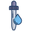

SimpleSketchJS
User Guide
About
Welcome to leSketchJS! An as-you-see-it digital painting application
Use this manual to learn the features of this application. Information found here is subject to update.
The Editor
SimpleSketchJS can essentially be broken down into two sections: The Workspace and the User Interface.
The Workspace is where the art happens! To the lower left you'll find the current zoom level which can be adjusted.
The User Interface is where you'll find the tools, page dimensions, layers and color palette.
Of course these work in tandem. The minimal design should provide clarity to their uses.
The Workspace
The Workspace hosts the Draw Space which is the drawable region within the workspace.
The Draw Space starts with a transparent background (the checkerbox design). All brush related actions are performed within
the Draw Space. Performing a "Mouse Wheel" or "Scroll" action whilst in the workspace will adjust the zoom.
Users can also manually adjust the zoom by typing in the desired zoom in the lower left side of the workspace.
User Interface
The User Interface hosts all the tools featured in SimpleSketchJS. The UI is divided into several sections
Info
The info features only one item which is the Book which brought you here!
Click on the book whenever you wish to refresh your knowledge on this application.
Canvas Size
As the name suggests, users will be able ot resize the canvas they are working with.
However, performing this action will clear all current layers
Tool
Tool section hosts the various tool that can be used to interact with the Draw Space.
The information here is contextual with the tool selected.
Tools
Eraser |
 |
A stroke based tool. Removes pixel data from a layer. |
Eye Dropper |
 |
Current not implemented |
Pen |
A stroke based tool. Performs strokes without any varience in opacity. |
|
Brush |
A stroke based tool. Looser then the Pen tool, reacts to pen pressure applied. |
Palette
The palette hosts the ColorPicker and the saved color set.
The ColorPicker is an external app created by iro. Find the library here iro.js.org.
To bind a color click one the adjacent boxes and then adjust the color form the colorSphere.
The current color selected on the ColorWheel will be your brush color.
Hot Keys
e | Selects the Eraser tool. |
i | Selects the Eye Dropper tool. |
p | Selects the Pen tool. |
P | Selects the Pencil tool. |
[ | Decreases the size of the active stroke based tool by 10. |
] | Increases the size of the active stroke based tool by 10. |
{ | Decreases the size of the active stroke based tool by 50. |
} | Increases the size of the active stroke based tool by 50. |
shift + N | Shortcut to create a new layer. |
H | Flip canvas horizontally |